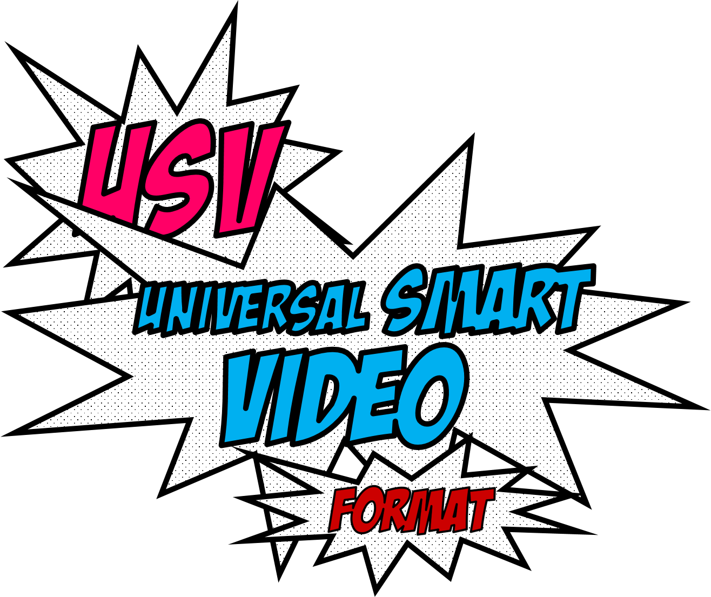
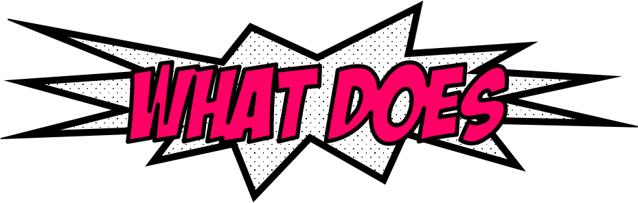
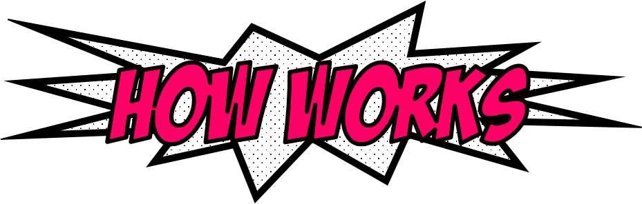
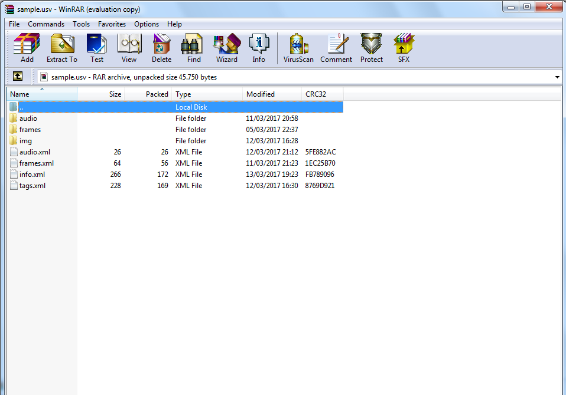
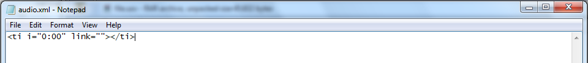
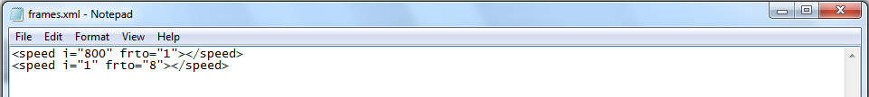
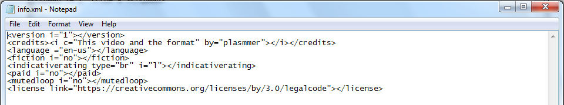
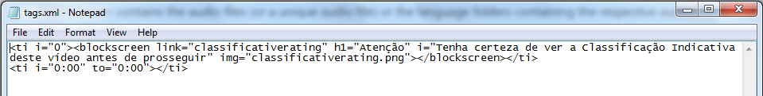

ModularNo need for complex binary editing and file duplication. Just open on any archiver as a .zip file, and change any data yourself. Version it on your favorite VCS without relying on Git LFS. Don't want to edit it manually like a crazy scientist? It's ok, you can do it on a video editor, and the result will not be a brand new video, but just a edition. |
UpgradeableAfter editing, use Aragon's Pando or Dat Protocol to version your changes, as a software being updated. Diff it as a natural folder. |
Multi-connectionUSV videos are prioritarily downloaded at SQCIF quality (lower than 240p and even QCIF - and if you seed a higher quality, you need to seed the lowest to help newcomers), ideal for slow/limited connections. But it supports up to 8640p (16K). |
Multi-languageUSV takes it seriously. Why limiting to subtitles if you can have the option to watch the speaking in your native language? Some people dislikes subtitles as being distractive, making you lose details of scenes, and not accessible for who is blind. You can watch dubbed videos and contribute yourself with your team. A dubber is turning a serious talk into a comedy with a wrong dubbing? Changes the dubber through voting (Aragon). If you want to learn a new language or can't hear (or simply hates dubbing and loves subtitles), subtitles are also supported using VTT format. Prefers SRT? Not a web standard, but also supported as USV is modular. |
Multi-networkUSV is made for the web, and more for the decentralized web (Web3 or web 3.0). It is designed to fit any network and protocol with its modularity and lightweight design. |
InteractiveEngage your audience in a brand new way. Instead of asking for a like or subscribe, show the buttons appearing on your hand. Use your creativity. There are more options for making your video interactive, such as cards, annotations and blockscreens. |
CSS (Cascating Style Sheets)Create or apply amazing effects, filters and transitions; as if your video were a webapp/HTML page. |
Multi-deviceBy being lightweight, USV videos are playable even on a smart-watch. By being quality-scalable, it can be finely playable on a 16K televisor and upper through its modulary. |
StreammableLike .zip, no compressed file formats does support live-streamming? Being a folder on classic web, Aragon's Pando or Dat Protocol makes USV streammable. Quality-scaling makes streams accessible for any device or connection. |
USV (Universal Smart Video), as the name says, is a borning web-standard format for smart/interactive videos. We can call it "the video of the future".

Do you imagine if we have the power of YT's videos in a local file on our own devices? A USV file can have credits to the authors, multiple language subtitles/audios, indicative rating, tags, etc. All it embedded into a single video file! Please read more in the specs to know.
A .USV file is just a compressed archive (.zip) with the extension changed to .usv or a folder on Dat/IPFS, containing this structure:
The images/frames can be in both PNG or SVG, and the audios in both OGG or FLAC. All other infos are stored in XML files.


